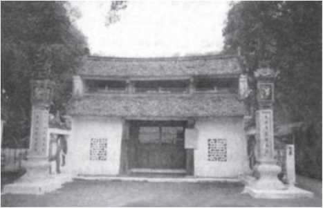

Giai Thoại 11

ất cả sử sách của nước nhà, bất kể là cũ hay mới, bất luận là viết ở đâu, hễ có giới thiệu về thời Bắc thuộc là thế nào cũng dành những lời trang trọng để nói về Hai Bà Trưng hai vị nữ anh hùng đã quả cảm phát động và lãnh đạo nhân dân cả nước ta, vùng lên đập tan chính quyền đô hộ của nhà Đông Hán và lập nên nền độc lập, tự chủ trong vòng gần ba năm. Hai Bà Trưng là biểu tượng của ý chí hiên ngang và khí phách quật cường của cả dân tộc. Nay, xin theo những đoạn ghi chép tản mạn của sách Đại Việt sử kí toàn thư (ngoại kỉ, quyển 3, từ tờ 1 - b đến tờ 4a) mà dựng lại lược truyện về Hai Bà Trưng như sau:
“Thái Thú quận Giao Chỉ là Tô Định dùng chính sự tham lam tàn bạo. Trưng Nữ Vương dấy binh để đánh” (tờ 1 - b).
“Mùa xuân, tháng hai (năm Canh Tí, 40 - NKT), Vua khổ vì Thái Thú Tô Định dùng pháp luật hà khác để trói buộc, lại thêm thù Tô Định đã giết chết chồng của mình (là Thi Sách), bèn cùng với em là Trưng Nhị nổi binh, đánh vào trị sở của châu. Tô Định chạy về nước. Các quận Giao Chỉ, cửu Chân, Nhật Nam và Hợp Phố đều hưởng ứng, (Trưng Nữ Vương) lấy được sáu mươi lăm thành ở Lĩnh Nam rồi tự lập làm vua” (tờ 2a và tờ 2b).
“Nhà Hán thấy họ Trưng xưng vương lại dấy quân đánh vào các vùng biên thùy, bèn hạ lệnh cho các nơi như Trường Sa, Hợp Phố và cả Giao Châu sắp sẵn xe thuyền, sửa sang cầu cống, khai thông khe núi và tích chứa lương thực, đồng thời, phong cho Mã Viện làm Phục Ba Tướng Quân, phong cho Phù Lạc Hầu là Lưu Long làm phó tướng, đem quân sang xâm lược” (tờ 2b).
“Mùa xuân, tháng giêng (năm Nhâm Dần, 42 - NKT), Mã Viện đi men theo ven biển mà tiến vào nước ta, san núi làm đường đến hơn một ngàn dặm, đánh nhau với Vua (chỉ Trưng Nữ Vương - NKT) ở Lãng Bạc (phía Tây của La Thành gọi là Lãng Bạc). Vua thấy thế giặc mạnh, tự thấy quân mình ô hợp, khó có thể chống nổi, bèn lui về giữ Cẩm Khê (cũng có sách chép là Kim Khê). Quân sĩ cho Vua là đàn bà, chẳng thể cầm cự được, bèn bỏ chạy. Quốc thống từ đó lại đứt” (tờ 2b).

Đền thờ Hai Bà Trưng (Hà Tây)
Lời bàn:
Về Hai Bà Trưng, xin được mượn hai lời bàn của hai sử gia tiên bối lỗi lạc là Lê Văn Hưu và Ngô Sĩ Liên thay cho lời bàn của tác giả. cả hai lời bàn này đều có trong sách Đại Việt sử kí toàn thư (ngoại kỉ, quyển 3).
Lời của Lê Văn Hưu như sau: “Trưng Trắc và Trưng Nhị là đàn bà, vậy mà hô một tiếng, các quận cửu Chân, Nhật Nam và Hợp Phố cùng 65 thành ở Lĩnh Ngoại đều nhất tề hưởng ứng, việc dựng nước xưng vương dễ như trở bàn tay, xem thế cũng đủ biết hình thế nước Việt ta có thể dựng nghiệp bá vương được. Tiếc thay, trong khoảng hơn ngàn năm, từ sau họ Triệu (chỉ Triệu Thị Trinh - NKT) đến trước họ Ngô (chỉ Ngô Quyền - NKT), bọn đàn ông chỉ biết cúi đầu khoanh tay làm tôi tớ cho người phương Bắc, há chẳng là xấu hổ với hai chị em đàn bà người họ Trưng hay sao? ôi, như thể cũng có thể nói là tự vất bỏ mình rồi vậy” (tờ 3 a).
Lời của Ngô Sĩ Liên như sau: “Họ Trưng giận Thái Thú nhà Hán bạo ngược, liền vung tay hô một tiếng mà khiến cho quốc thống của nước nhà có cơ hồ được khôi phục, khí khái anh hùng đâu phải chỉ khi sống thì dựng nước xưng vương, mà còn cả ở khi chết còn có thể ngăn chặn tai họa. Phàm gặp những tai ương hạn lụt, cầu đảo không việc gì là không linh ứng. cả đến Trưng Nhị cũng vậy. Ấy là vì đàn bà mà có đức hạnh của kẻ sĩ, cho nên, khí hùng dũng ở trong khoảng trời đất chẳng vì thân đã chết mà kém đi. Bọn đại trượng phu há chẳng nên nuôi lấy khí phách cương trực và chính đại đó hay sao?” (tờ4a).
Bạn nghĩ gì về hai lời bàn này?